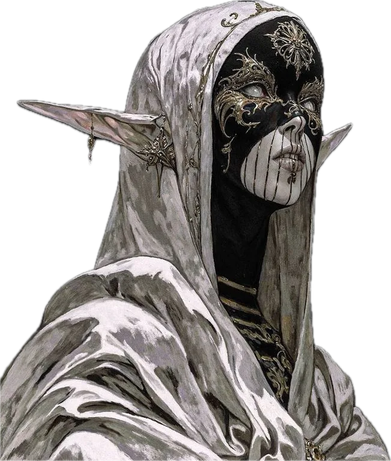
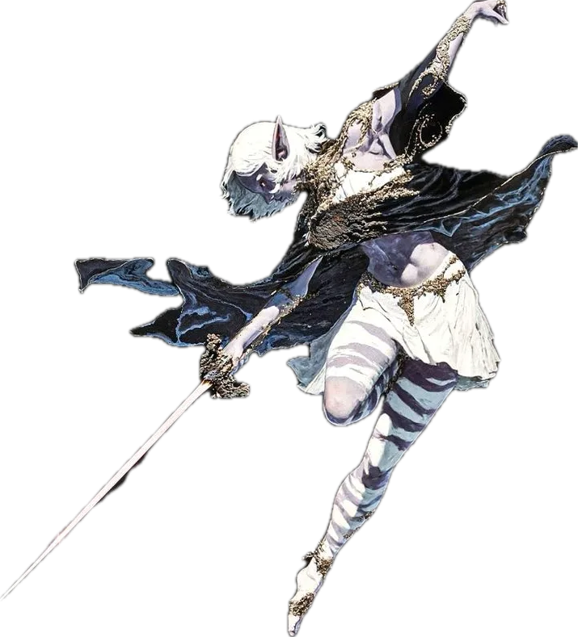
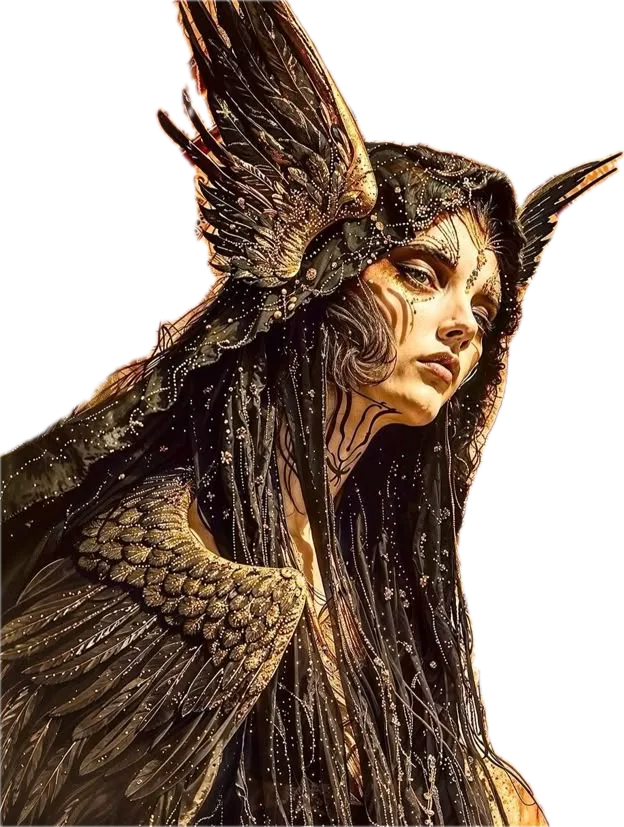
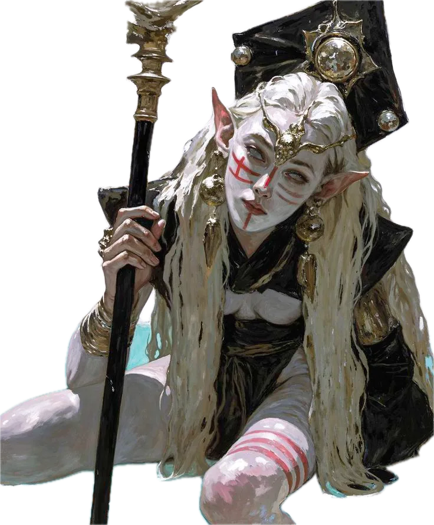
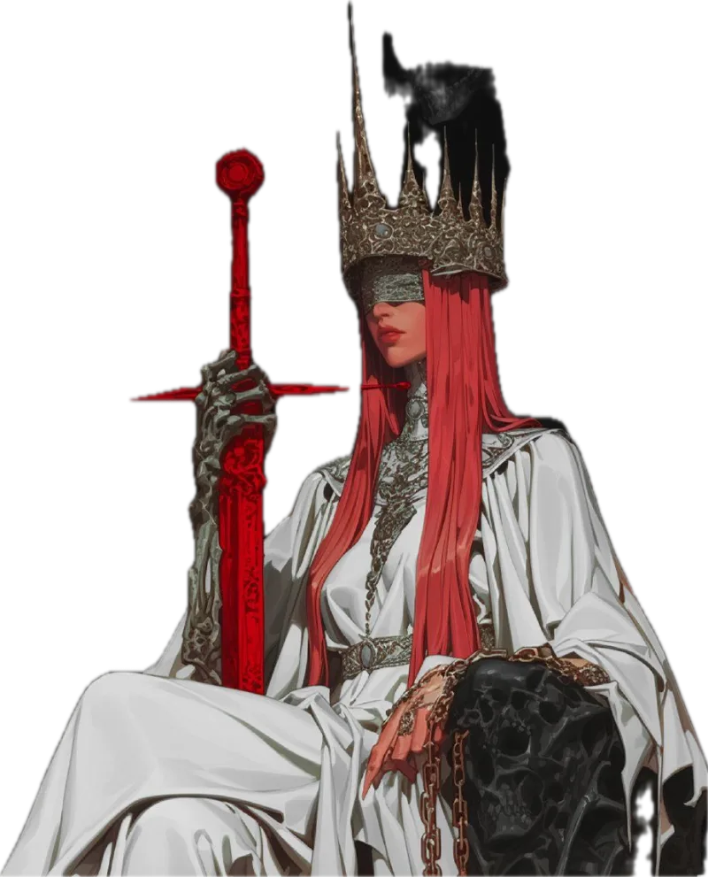

i.
There is a music that was never written. It is played each night on pipes taller than prayer, for an audience that never blinks.

ii.
The dancers come in with the dust. No one remembers inviting them. No one has ever asked them to stop.

iii.
Something watches from above the pipes. Some say the city grew around its gaze, the way a pearl grows around a wound.

iv.
The pale ones deal only in questions. Answer one, and you will owe another. No one has ever settled the debt.

The door was never locked.
step into the dust